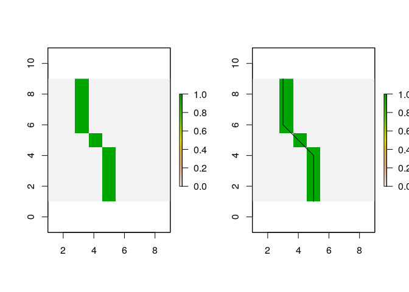

Morphology analysis of stream networks
Installation
You can install streamnet from github with:
In addition, many functions require a system installation of GRASS 7 along with the v.stream.order extension.
There is a helper function to install v.stream.order at streamnet:::install_grass_extensions.
Usage
Calculate morphology metrics
data(nhd_sub_lines)
data(nhd_sub_lakes)
outlet_reach <- terminal_reaches(network = nhd_sub_lines,
approve_all_dl = TRUE, quiet = TRUE)
outlet_point <- st_cast(st_line_sample(outlet_reach, sample = 1), "POINT")
ggplot() +
geom_sf(data = nhd_sub_lines) +
geom_sf(data = outlet_point, aes(color = "red")) +
scale_color_manual(labels = "outlet", values = "red") +
labs(colour = "") + theme_minimal()
calc_metrics(nhd_sub_lines, nhd_sub_lakes)Create synthetic stream networks

# Generate from a binary raster
foo <- matrix(0, ncol = 9, nrow = 9)
foo[1:4,3] <- 1
foo[5,4] <- 1
foo[6:9,5] <- 1
foo <- raster(foo, xmn = 1, xmx = 9, ymn = 1, ymx = 9)
origin <- which.min(apply(
which(as.matrix(flip(foo, "y")) == 1, arr.ind = TRUE), 1, sum))
res <- raster2network(foo, origin)
par(mfrow = c(1, 2))
plot(foo)
plot(foo); plot(res, add = TRUE)